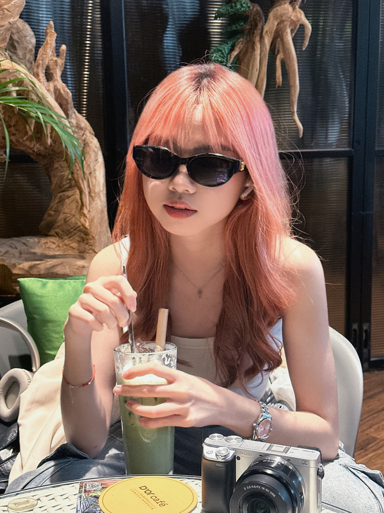

[我是一名在台灣學習室內設計的創作者，專注於空間與氛圍的塑造。我關心的不只是美感，而是空間帶來的情緒。擅長運用光線、材質與細節，打造安靜、壓迫或帶點神秘感的場域。 過去的影像背景，讓我習慣用「說故事」的方式去設計空間。我想做的，不只是設計，而是讓人感受到的空間。]
[開始年月2024] - [至今] | [林口]
[開始年月] - [結束年月] | [地點]
[LIT113，數位多媒體學系 學士] | [2028]